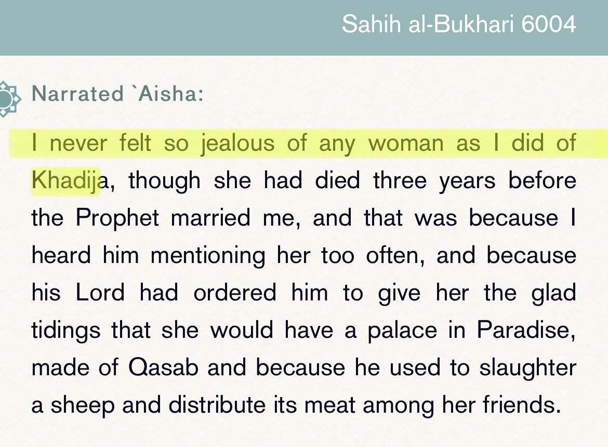
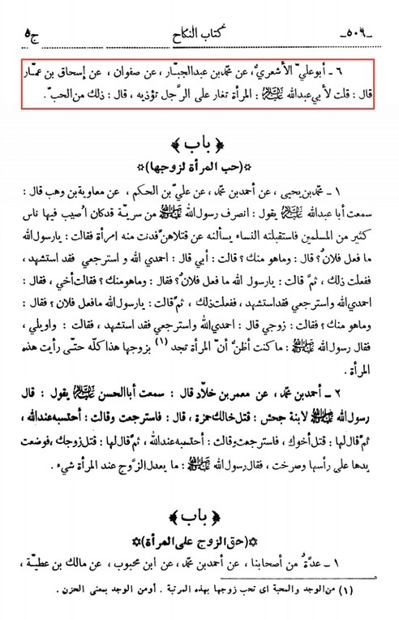
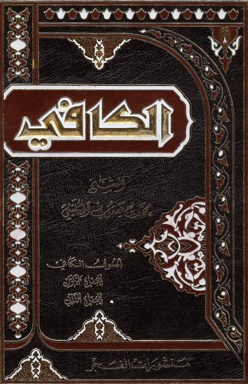
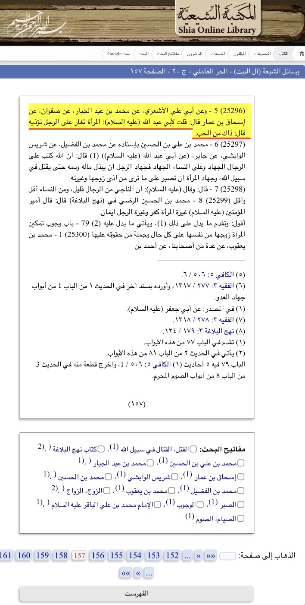

Shiat Abdullah ibn saba use this hadith to say she is a evil women for having jealousy but according
to shiat Abdullah ibn saba kitabs their is nothing wrong with this.


Abu Abdullah was asked, " A woman annoys a man due to her jealousy.He replied, That is out of her love."
Grading: It was declared 'Muwaṯhaq' by Muhammad Baqir al-Majlisi.
Ibn Hajar tasfir
As for a woman who was jealous of a Prophet in whom jealousy is proven, and her sexual affair is not denounced,
she is one of the virtuous women, as well as those who are less than them, and that Aisha was jealous of the Prophet’s
wives, but she was more jealous of Khadija.
Source: Fath Al Bari under hadith 3816
Ibn hajar said:
Jealousy is forgiven for women for what happens in it, and there is no punishment for them in that case,
for what they were inclined to do, and that is why the Prophet, saw did not rebuke Aisha from that.
Kitab: Fath Al bari hadith 3721

Here the Shia ‘mujtahid’ hurr al-ameli quotes the narration in his wasail Al-Shia volume 2 page 157